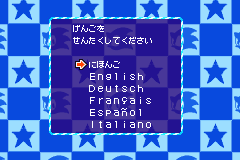

Sonic Pinball Party (Japan) (En,Ja,Fr,De,Es,It)
Flash 512K Save Format Spec gbakit Built-In
Cartridge Identity
- Game Code
A86J(FamilyA86)- Header Title
SONICPINBALL- Maker / Revision
8P/ rev0- ROM Size
- 8.0 MiB (8,388,608 B)
- Save Media
Flash 512K- SHA-256
cd45bf565840e4b32e40e9262acf66ca15be072d5191447e326e48ad2de41565- Engine / SDK Group
comm-016(22 families)
Screenshots


Battery Save Format Specification
Open Full Save Format SpecDownload Sample .sav (65,536 B)Download save-format.json
- Specification Coverage
- 31 mapped fields · 1 verified checksum(s) · Confidence: MEDIUM
- gbakit Built-In Support
- Built-in (A86J)
gbakit save verify A86J save.sav
gbakit save decode A86J save.sav
gbakit save fix A86J damaged.sav -o repaired.savObserved Battery Save Layout
- Fill Byte & Active Size
0xFFfill · 4,096–8,192 / 65,536 B active (entropy 1.67 bits/B)- Active Offset Ranges
0x0–0x1FFF(1 total)- ASCII Magic / Headers
SONIC_PB,9SONIC_PB- Observed Variable Regions
- 4,096 bytes across 1 spans:
0x1000–0x1FFF - Candidate Checksum/Counter Spans
- None
ROM Assets, Compression & Audio
- BIOS Compression
- LZ77 (
0x10): 295 streams · RLE (0x30): 0 streams - ROM Pointer Tables
- 122 tables (6 pointing to validated compressed streams)
- SDK Backup Tags
FLASH512_V131
Hardware MMIO Subsystems
ppu_display0x8000a98,0x8000d5c,0x8000f10,0x8001134,0x800162c,0x80030fc,0x8003250,0x8003278save_bus_sram_flash0x805ff48,0x806019c,0x8060300,0x80605b4